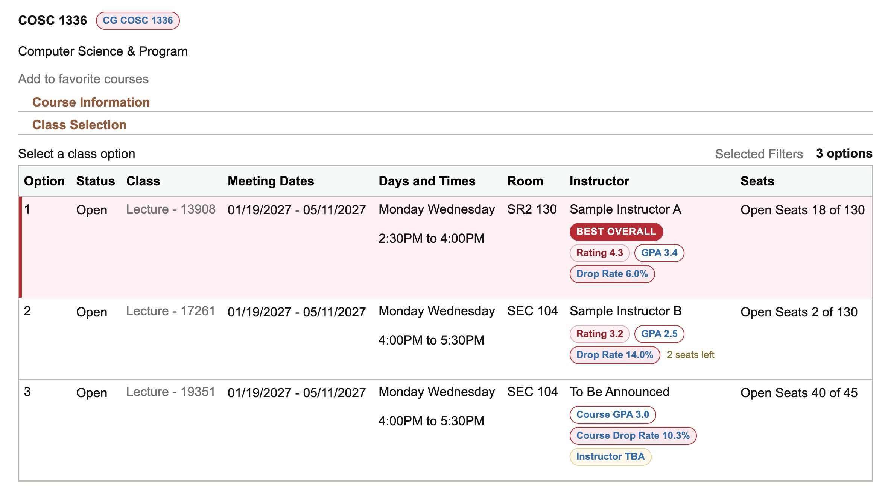

FOR UNIVERSITY OF HOUSTON STUDENTS
Know more before you enroll.
Professor ratings, GPA, and withdrawal history—right in myUH.

RateMyProfessors
+ CougarGrades
+ CougarGrades
Professor ratings, GPA, and withdrawal history—right in myUH.
